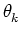

Next: fwt2d_allwav
Up: The commands in alphabetical
Previous: fst
Contents
Subsections
fwt2d
2D framed wavelet transform
Syntax
obj = fwt2d( tI, framename, J, K, ...
[, 'scbase', scbase] [, 'scfirst', scfirst] ...
[, 'sc', sc ], [, 'ang', ang ] ...
[, 'FrameOptionName', FrameOptionValue] ...
[, 'export', export ] )
Description
fwt2d computes and returns the 2D framed wavelet
transform, or frame decomposition, of an image,
that is the coefficients:
App = I * PHI[a\_J]
Wav[j,k] = I * PSI[a\_j, \theta\_k]
where * is the convolution operator,
j = 1..J, k = 1..K,
aj = a0*p(j - 1) for a first scale a0 and a base p,
 = k*2*pi/K.
The frame scheme, that is the set of of functions PHI, PSI
and CHI, may be chosen among the
ones defined in the subdirectory 'frame_defs'. Notice that in
this directory, to one kind of frame correspond always three
functions:
- '<framename>_app' for the low frequency approximation
- '<framename>_wav' for the wavelet definition
the decomposition.
Input Data
- tI
- [CPLX ARRAY]: the Fourier transform of the image to
analyze;
- framename
- [STRING]: the name of the frame to use;
- J
- [INTEGER]: the number of scales on which the frame is
based;
- K
- [INTEGER|VECTOR]: in case of a directional frame, the
number of sectors to use. If this number is different for each
scale, it is allowed to enter a vector of length J
representing the number of sectors for each scale from the first
to the last one;
- scbase
- [REAL]: the base 'p' in the power law rule that
governs the scales, i.e.
aj = a0*p(j - 1);
- scfirst
- [REAL]: the first scale a0 in the scale rule
above. By default, this a0 is set to 1/2 giving a complete
covering of the frequency plane if the wavelet is contained in
the ring -pi/2 <= abs(k) < pi;
- sc
- [VECTOR]: vector of scale indices between 1 and 'J'
in which the decomposition must be restricted;
- ang
- [VECTOR]: vector of angle indices between 1 and 'K'
in which the decomposition must be restricted;
- export
- [STRING]: could be 'app', 'wav', 'allwav', or 'rem'
and involves respectively the computation of only the
approximation, the wavelet coefficients or the high frequency
remainder.
Output Data
- out
- [STRUCT]: the output of the transform. It is a
structure with the following fields:
- out.type [STRING]: transform type ('fwt2d')
- out.app [MATRIX]: the approximation
coefficients;
- out.wav [CELL]: 2D list of 2D matrices where the
wavelet coefficients are stored.
- out.rem [MATRIX]: matrix storing the
high frequency remains coefficients
Example(s)
>> %% Create the woman example
>> load woman; tX = fft2(X);
>> figure; yashow(X,'square','cmap','gray');
>> %% Decompose mat on the Angular Spline frame of 3 scales and 6 angles
>> fc = fwt2d(tX,'aspline',2,9);
>> %% Displaying the approximation
>> figure; yashow(fc.app, 'square');
>> %% Displaying the wavelet coefficient for sc=1 and ang=2
>> yashow(fc.wav{1,2}, 'square');
>> %% Displaying the summation of all the frequency masks
>> yashow(fftshift(fc.allwav), 'square');
>> %% Rebuilding the matrix without the approximation
>> fc.app = zeros(size(X));
>> nX=ifwt2d(fc);
>> %% Showing the result
>> yashow(nX, 'square', 'cmap', 'gray');
References
See Also
aspline2d_app, aspline2d_high, aspline2d_info, aspline2d_wav
discrete/frames/2d/fwt2d.m
Next: fwt2d_allwav
Up: The commands in alphabetical
Previous: fst
Contents